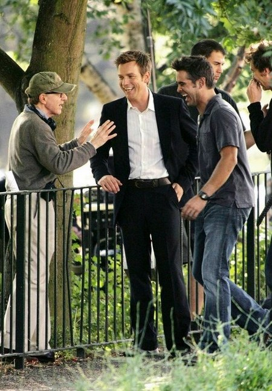
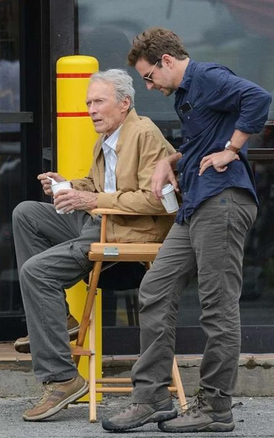
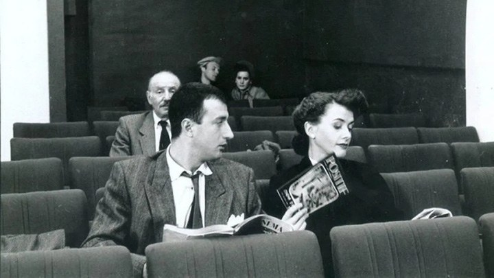
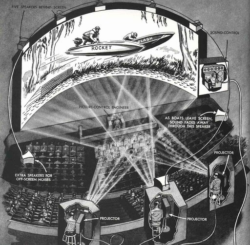
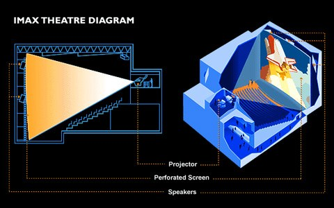
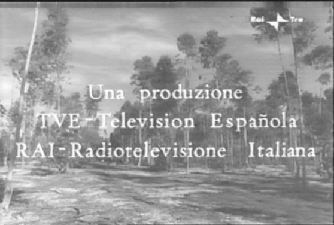
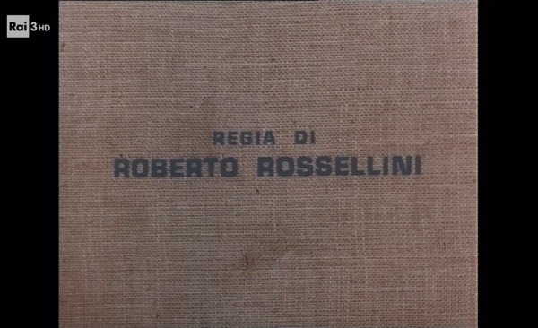
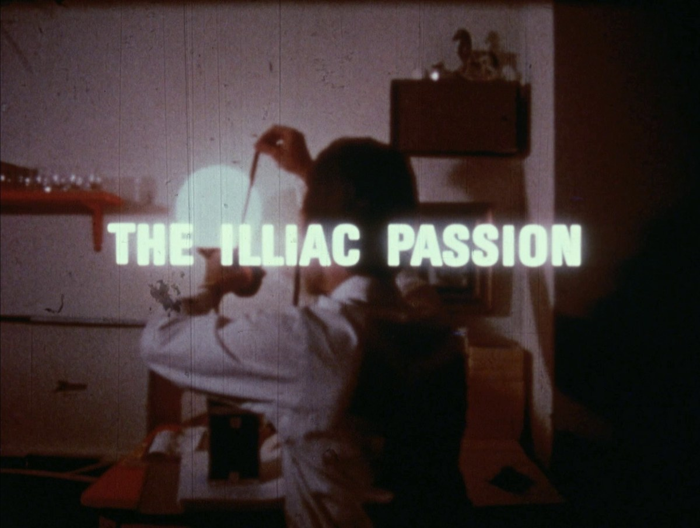

Issue #1 — To Utopia
Cinema Without a World
Modern Filmmaking and Exclusivity
Chaz Mullis: Can we start by defining “modern filmmaking” and how it distances itself from the trends of the past? I think it would be easier to start there to better identify the shortcomings of a lot of new movies we see today.
Zoey M. Hogan: I would say modern filmmaking essentially doesn’t exist in the sense that you’re filming anything...
CM: Is it necessary to juxtapose technique with temporality with regards to modernism in film?
Jean-Luc Jacques: With the word “modern”, a lot of the time when people use the word, they just mean contemporary. Valéry said this once: modernity is more of a state of mind; it’s something that’s unchanging, like a stream. It’s a state of mind that can’t be striven towards; it can’t be changed; it’s like a birthmark imprinted upon the body of the artist; you’re either modern or you’re not. It’s not simply just being contemporary or just being “of the times”.
ZMH: Yeah, modern cinema is essentially without the ability to actually replicate its expression to an outside world. Modern films still apply to materiality, but the lack of ‘formalism’ or just like what we all kind of understand broadly to be “the art of cinema proper” essentially destabilizes that relation to materiality as an acute expression, which in turn causes the distinction between the world and the frame that used to be so perfectly unionized to disappear...you could say modern filmmaking, as it exists today, is a cinema without a world.
JLJ: I’d say: these works are so rare that when we find them, to declare them as modern is - it’s a good thing, and it’s possible. You can see a fantastic work and say it’s modern, but it’s not something that can just be seen as often as you might have been able to see it in the 1960s or the 1950s before television, before leisure, before all the things that kind of push, as Zoey said, push this subjectivity over everything, and bodies are multiplied, filtered into niches or subcultures, and we lose a central specificity. We don’t really see the director as an artist capable of intelligence anymore - and that’s kind of a sad thing, I think.
ZMH: When it comes to like...the subjectivity, it’s not like things haven’t always been subjective; it’s just there’s kind of - the subjectivity has changed in a way where there’s not a space where subjectivity operates, it's like that every person is now their own space, so that kind of context to reality - that effect on the art has made the idea of filming anything with a unique purpose like almost disappear. Even if an artist does, culturally it’s rarely going to be seen that way because there’s not even a ground anymore in the world. There’s not a space - where things kinda properly relate to each other. Some people talk about the kind of Renaissance, like there’s going to be another New Wave, but there isn’t any cultural ground for that to exist in comparison to the old New Wave.
JLJ: There aren’t any masters to take the helm in order to usher in any meaningful cultural change, especially given the stigma around referring back to the “classical”. There are movies here and there; Woody Allen’s Cassandra’s Dream, there’s The Ghost Writer... also, less so The Mule by Clint Eastwood. We see these films and feel like they exist outside the current trend that isolates people in their own universe. I think The Odyssey is a good example of a film that reaches towards, or attempts to reach toward something, with a lot of caveats and things that don’t necessarily work; it’s on the way to bringing us that rarity we haven’t seen in a long time.


CM: Absolutely, I would like to focus more on that film because it’s so emblematic of what the industry seems to want out of a movie theater experience yet never reaches it by itself. Christopher Nolan, I believe, is synonymous with term “movie director” for a lot of people, but for others, I feel like he’s synonymous with IMAX. He has substantial control of both sides of the filmmaking experience. What direction do you all think this is leading the art in?
ZMH: Well, I personally think that the way the Odyssey was handled with those weird cards and the “what format did you see it in” gimmick and kind of generating this cultural desire almost to check off formats as you see them and see all of them: I think there’s kind of this problem that’s going to arise, and it’s always been there throughout cinema history in some way, but it’s just the fact that we’re in a cultural period today where this is going to completely kill any kind of "proper" relation to art instead of the art existing despite this - but I think the idea of the artist’s vision as a concept that generates the kind of cultural relation to "what the expression is" is going to relate very cancerously with how much the idea of cinematic "events" also seem to have become important. The artist’s vision is becoming something that is being sought after in a completely anti-intellectual and unartistic way, where the ambition and vision, and these words are mostly useless, is affirmed or denied relative to the abstract cultural idea of hypothetical film that just came out instead of the actual artistic logistics present in the film.
JLJ: For me, I think that the element of marketing and necessarily the intention of the director are definitely separate. The marketing people necessarily don’t believe in the commerciality of a film enough and turn them into novelties with these cards like you’re saying, or the popcorn buckets, things to make people go to the theaters because necessarily they don’t believe in the tangible power of a film to move mountains on its own... to collect an audience anymore. I believe the film is, you know, very commercial; I think it appeals to a wide set of people from everywhere and all sorts of demographics; it never pigeonholes itself in non-autonomous external crowd-pleasure tactics so common now, which I think is good. But I think the element of IMAX as a format is just another evolution in the process towards a possible sublime reproduction of the world. I think as a format it’s not perfect, but I think Nolan isn’t the one moving towards an artificial cinema as a lot of people like to suggest. I think that can be attributed more so to Villeneuve and his more vapid images and - well...that’s a whole other conversation, though - I think as a director Nolan is helping people return to the theatre for better reasons than others, and I believe, if we want to learn and be able to recognize, ultimately actually feeling mise-en-scene, you have to be seated in an auditorium. Most value is lost outside of this spatial context. Those who pretend to be able to fully see films and diagnose them outside of the theatre are being facetious. Television screens culture the opposite. I think Nolan does deserve a lot of respect, even though a lot of his earlier films are abominable and it’s taken him a long time to work with constructive material, but he has brought people back to the theatre. Theatres are being rebuilt, and more repertories are being constructed. The trend is going in a good direction; unlike the 1960s, when the world saw a lot of theatres closing, more and more were closing throughout the subsequent decades. Now, ever since COVID, we’re starting to see a pickup, and I think Nolan has a sizable influence on the population currently interacting with cinema. Of course, it is far from a perfect cultural situation, but it seems the time to strike the iron regarding influence.

ZMH: I disagree, where I kind of want there to be a better relation to the reasons people are going, but this also is kind of a fantasy. I think they are watching the cinema without interacting with it, and maybe this just stems from our disagreement about The Odyssey, but I have no belief that IMAX is going to engage people with feeling mise-en-scene in any way... or at least like in a kind of progressive way... because, again, I don't think the translation of representation from the frame to reality is going to be revived until we have established the way to navigate the structure of how appearance relates in our current cultural period, and only then do artists - including Nolan, of course - have to understand this. I’m so very attached to this idea that a film is an object in the sense it is viewed by the subjective body as the same thing, not contextually, but materially. The kind of inherentness to that object exists differently relative to the conditions it is seen within, of course, but it still, if we are to make films to kind of generate "thought productions" or whatever the word you'd use, to relate form to culture in that way, once again I think more questions need to be asked than "How can we get people to the cinema?"
CM: It really comes down to how much one feels the viewer should submit to the film. Part of that submission comes through how the viewer is relegated in relation to the screen. I remember reading how Mourlet would sit in the middle of the fourth row to be “inside the image, neither too close nor too far away.” ...For IMAX, does the elimination of the edge of the frame, depending on where you sit, negate or add to the viewing experience for you all? I know you Jean-Luc, have most recently seen it; I have as well. I’ll let you go first for what you think.
JLJ: I think that IMAX 70mm is a mixed bag. It’s too tall; I think it reaches so far that your eye can kind of discontinue to see certain essential parts of the image. While being absorbed by a good film, it doesn’t reduce your ability to necessarily see the subjects and to see and understand the intelligence within the film and how directors are moving their actors, but it does kind of reach so far that it’s almost becoming CINERAMA, where they’re building it so big, with breadth that extends beyond peripheral vision - and so all-encompassing that it kind of has an opposite effect - I do think that there is an argument to be made that they’re stretching it a little too far vertically, and that it loses parts of its strength. At the end of the day, the real potent issue at hand is how directors work; it is foul, they watch too many films and remake their favorites, or they impose other art forms upon the method of cinema.
CM: I think it’s interesting how the format itself is integrating with the film, with the commercial push for everybody to try to see it in IMAX 70mm. You always felt during the advertising campaign that you couldn’t really see the film without seeing it in this premium format. There were other formats you could freely see it in, but in all the others, part of the image was always cut off.
ZMH: I don't really think I have that much of an organized idea about IMAX besides the obvious, which is the cutting off the edge of the frame is simply evil and stupid and a disservice to the public by denying them even just the potential of having a progressive encounter with art unless you go to a specific type of screening. Especially a film as successful and with such a high viewer count as The Odyssey, many instances with its frames destroyed. Again, it goes back to that problem of creating an event out of things that culturally clouds the hypothetical art that may be present. This has existed since the beginning of cinema, but has taken a more and more reactionary form later. I heavily disagree that the theater is the required or even desired viewing ground in many instances, so it doesn't really matter to me, because eventually the full correct shape of the frames will be widely available to anyone who wants to see them. And all this said, for a film I found mostly a waste!


CM: IMAX 70mm is bringing in a bigger interest for seeing films on various film formats, and what I’ve seen is a partiality not for experiencing the movie itself, but for the surplus-enjoyment of seeing a film in 70mm, 35mm, 16mm, etc.
JLJ: I mean they shouldn’t be treated like a bucket list that you’re slashing names off of, but I do think that digital projections are inferior to seeing films on film. I saw Close Encounters of the Third Kind recently, which totally changed the movie; you’re actually able to see the concentration of light, and it kind of pierces your eye and you actually kind of feel it more potently. I think from the beginning of time this is really how films need to be seen, but on the contrary, I don’t think we should be treating it like the marketing teams and the advertising departments are treating it concerning the Odyssey, where it is a piece of paper; they want you to see each format, but reality and its reproduction, I feel, require collectivity and the theatre to maximize a director’s imprint on a staging and our ability to understand it fully.
ZMH: Well in many ways I do still agree with the idea that people should see things on film. What you say about that is true in the sense that it is closer to the ability to kind of show the gestures or facial contortions or just anything within the arrangement in a more kind of "true" way. What I guess I mean is that sometimes I think people with this idea, while correct, still tend to kind of stop there. You talk about sublime reproduction, and that of course is important to cinema in some aspects. Still, after the fact it has got to become a kind of epistemic aesthetic object as well. I think the core of that being a necessity for thinking about film isn't really lost within the kind of psychological ability one has to infer the missing pixels or information present in these horribly treated copies of deathly important films we have today.
JLJ: Cottafavi?
ZMH: Yeah, Cottafavi. Etecera times a thousand [laughs].
JLJ: And television itself, I mean the fact that a lot of those films are lost, specifically about Cottafavi because they were shown on air but there was no effort put into preserving them afterwards. It was up to the people to record them while they were premiering.
ZMH: Oh yeah. Same with Rossellini's television films; those earlier Olivieras are a little better upkept, but everyone who cares for his work knows there was a special on "marathon" on Portuguese television at a certain point, just from the copies we have available to us. Same with those Cottafavi television films. There isn't really a place in which they are "meant to be cared about" culturally. It's kind of "up to the viewer" in a way much more dangerous than them being shown in a cinema, if that makes any sense.


CM: Maybe this should be the standard for the modern cinephile: rediscovering these films that are starved for critical attention, no matter the condition they are in... I’ve been thinking of what the definition of “cinephilia” is in relation to all this, and how it culminated into where we are now, where maybe there is still an element of wanting to make a name for yourself in the cinema industry. Now its more of doing whatever is necessary just to see all these films. I think it’s also worth mentioning a different type of exclusivity and surplus-enjoyment within this sort of neo-cinephilia: that of “grail culture” and the social currency built up by hoarding an assortment of unreleased experimental films. Granted, this is a very small portion of people who consider themselves “cinephiles” today, but online it’s becoming more and more prevalent, in my opinion.
ZMH: Grail culture is something I am close to just by the nature of my tastes, but I do not understand this landscape a bit, so I might just kind of be a bad person to ask, but to go to your first question, the social aspect of cinephilia is strangely in this becoming the replacement of the actual cine part of the philia. You see it everywhere. There is no longer, broadly, besides within the niche circles we come from, thinking or even just properly observing in relation to cinema, so the social aspect inevitable to any collection of people loses that kind of reason or connective tissue to the actual topic of cinema when emerging within a culture that is always discussing films kind of as "hypotheticals" or discussing them as events (and hence, entertainment) instead of "art".
JLJ: I agree with that, and it seems like the focus with regard to these “rare” experimental films is more connected to their status of rarity rather than their quality. We know my position on experimental cinema already, so there is no point in reiteration. The fact that they’re unseeable and almost treated as holy objects, hence the term “grail”- they’re holy grails that you know, these conquistadors or crusaders go and try to attain from the hands of the filmmaker, right? [chuckles], filmmakers whom I think the sensationalism is equally the fault of because they want this to remain like - they want to remain surrounded by a mystic atmosphere and be known as ancient polytheistic-age priests who force the audience to move mountains to see their lackluster films. I don’t think we can necessarily compare it to IMAX 70mm and the exclusivity of that because I think that’s up to the manufacturer who hasn’t made new projectors in 50 years. Maybe we can see - if people continue to go to these screenings, they’ll make more to match that demand, and erect more screens in smaller places and more smaller markets.
ZMH: I mean, I don't know. As I said, I don't know enough about the whole community to really make these declarative socialized statements about the reasoning behind why the actual filmmakers of these keep these hidden. I'm sure there are economic factors as well. I think on a very real level they are almost in agreement with you more than I would be about forcing people to see their films in the ways they view as "correct", feeling the frame with the proper ability to have it give what it can to you, etcetera, but for the actual "grailers" on the outside of actually making films, I like the crusaders metaphor (laughs). To me, the reason is probably there and is just incomprehensible to me. I don't know, I watch what I can.

CM: That pursuit of mystique and exclusivity discredits those who call themselves filmmakers, in my opinion, because, as you said, Jean Luc, collectivity and the inclusive, communal space of the theater is essential to the experience. Traveling to see films is one thing, but keeping them to yourself does not warrant the title of filmmaker as much as it does the title of home video maker. Gombrowicz made a good point when he said “the defenselessness of art in the face of human judgement is the sad consequence of its pride.”
JLJ: And all this happens behind the scenes. So the person who finds a link for a “grail” on Twitter doesn’t know what the hell happened for this to come out. And I think that person is the purest [laughing] - I guess the purest member of this whole debate between the people who go and rush to go see it in theatres, and the people who rush to get it on their screens at home by any means possible, really. But the person who just finds it, like in a kind of naivety, obviously they aren’t going to treat it the same way, and they’re going to see it naturally. None of this changes the fact that these types of films distract from a progression for the art form. Fewer cinephiles should make films and more regular people should direct.
CM: Does this kind of cinephile, one encapsulated in the exclusivity of the viewing experience, necessitate a renegotiation between the cinephile and the cinema (and/or movie directors and artists in general)?
JLJ: Everybody needs to change. I think it’s more so to do with the directors who kind of feed into this, and then there’s this back-and-forth effect there - like a ping-pong effect - where the director feeds into the audience who wants this type of film, then they feed it back by going to the films. And that’s why you see Obsession get so popular, an almost useless film. It comes out of the age of For You pages and increasing leisure against attentiveness, not only in terms of art but also in a general manner. Why do we accept YouTubers making films? Ridiculous. The cinephile doesn’t really exist in 2026 because what he sees is largely vapid; the culture needs to change, but to me that starts with the filmmakers.
ZMH: Like I said earlier, to me it simply starts with people being able to see again. Which is a problem out of the filmmakers' depth. Understanding observation implications, that what you are seeing is essentially implying something the subjective can use, etcetera, it's just I feel we've sunk so low into this problem that directors aren't really "feeding off" of the audience, but they don't even understand the traditions present in cinema they are supposed to arise from and change or develop consciously. Obsession was horribly, horribly shot. Just no sense of movement or implicative context implying anything about the language of the script. And that's what people are misunderstanding on a direct level is the distinction between framing relative to language and that the value of cinema is that this process changes the language and makes it larger, versus two isolated sections of shots and language existing without a relationship, but thats kind of getting off topic a bit (pause) I just think what needs to return is culture actually "knowing itself" in a sense, broadly, I think films with more implicative particularities will emerge if people come to understand the world outside of themselves, and again, this is a very vast problem that has little to do with cinema generally; it just affects its development, unfortunately. Obviously, there are ways to counter it within, though. And obviously, if you can, you should.
JLJ: Yeah [laughter]
JLJ: It is a monster that feeds itself through word of mouth in a sense we have never seen before. Obsession was born out of this sensationalist cyclical media structure; itself and movies like it are marketed through algorithmic compounding. I see an image or a scene on Instagram, and the absurdity of it is meant to cause me to spread it to others and get them excited, remember the smiling people at those baseball games or odd popcorn buckets. Even speaking about it in this context only exacerbates the problem, but people have to recognize that they are being conned by this repetition of horror films that require no attention from the viewer. People want to be pleased, and to me - I know there is a slight disagreement here about the problem’s diagnosis - directors feed the self-feeding beast even more; the culture might have self-replicating properties; however, artists always have a choice to rebel - and when I say rebel, I don't mean childishly as we see in One Battle After Another - but meaningfully and through intelligent decision-making with actors and the rejection of contemporary styles that reduce the actor and asphyxiate their ability to move.
CM: Every frame in Obsession felt like that: just utter suffocation. The frontal camera placements felt like mugshots almost.
ZMH: Well, I definitely agree I want the ability for these types of films to re-emerge. Artists should rebel in the way you mean, and others in my opinion. I just wonder if that type of rebellion will even properly translate into the world we live in. We know all too well it's possible as well for the "cinephile" to reduce a film you would hail as a masterpiece completely to nothing. You love Preminger from your own understanding and lack of apathy towards finding your relation to cinema. All of us here engage with art, and Preminger's genius can absolutely be seen by the blind. I am sure there is someone out there who loves both Whirlpool and Obsession, and in this, they haven't really seen either film, no?
JLJ: This brings up the two cinemas that have been spoken of. First, the one of drama, where A can only be A, all beauties, their inverse and our recognition of them lie in the objectivities latent through appearances all servicing a greater reality, one of sublime things. The opposition to this type, the “subjective” film, insistent on imprinting the self upon a space disregarding any semblance of truth. I think the idea that someone could like Whirlpool and Obsession introduces an answer and a question. The answer: good films and bad films alike can evoke the same results differently, a good film might exploit the beauty of a face, a bad one might provoke a relatable passing sensation. Both end up reaching a viewer's consciousness in a way that moves them. I wouldn't rush to say that it is the viewers fault that filmmakers use these sneaky routes and lack the ability to understand tone and more largely cinema, which brings us back to the question. Whose duty is it to remount a fallen culture? I doubt the populous, regardless of knowledge or social consciousness knows how to move mountains, but artists can.
CM: What we need are filmmakers who make works that can get back to the world; films that are not afraid to reconnect with the reality we face, not just politically or contextually, but interpersonally. Too much of today’s artistry revolves around interiority and subtextual key-jingling. Those are not films that reflect the world we lived or the one we live in. Our bodies and our actions are the most absolute documents that we have, and they are responsible for the best of films. Cinema going forward must not waste its ultimate resources: face, gesture, and movement.